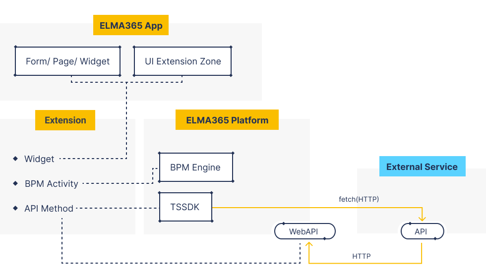

Opportunities for flexible solution development
Our system has a lot of quick and easy ways to implement the functionality you need using Low-code tools. We guarantee that solutions created with these tools can be supported in the future and will be compatible with newer versions of the platform. However, such tools will always have their limitations.
At the same time, some solutions require complex and deep technical expertise and simply cannot be created with the platform’s limited development tools. We understand this fact and make it possible for you to integrate anything you develop with our platform.
Developer’s first steps
- Register a cloud version of BRIX and explore the system’s capabilities.
- Read articles in the Help Center for a quick start and find answers to all frequently asked questions.
- Understand the system architecture.
- Learn about using scripts to add flexibility the system’s functionality in BRIX TS SDK.
- Learn about using REST for integrations in BRIX Public API.
Things you should be familiar with
- Understanding how Low-code development works.
- Knowledge of the TypeScript programming language for writing scripts.
- Ability to code in HTML + CSS and use third-party JavaScript libraries.
- Understanding the basics of communication between different services with HTTP requests.
- Understanding of service-oriented (microservice) architecture and its features.
- Understanding of containerization with the use of Docker and basic skills of working with Kubernetes to develop custom services.
Typical cases of solution development
Telephony integration
If no ready-made solution is available for your telephony provider, you can set up your own integration fairly quickly.
You can do it by using a custom module and scripts written in TypeScript. As the platform has an established approach to working with telephony, you need to create only a few methods. After that you will be able to set up telephony and use it in the standard interface of the platform.
Integration with an external system
You can integrate the platform with any accounting software your company is using.
There are several ways you can use an integration like this:
- One-way synchronization with the external system as a data source.
- One-way synchronization with BRIX as a data source.
- Two-way synchronization.
- Occasional synchronization within business processes.
To set up synchronization like this, you need to create a custom module that would include:
- Scripts that access the external system’s HTTP methods using fetch to retrieve data and save it to the platform.
- Processes in the module to run the script on schedule and process large amounts of data in a loop.
- Event handlers to send updated information to the external system when a user creates or edits an item on the platform.
Operator’s working space
For example, you can set up a form the bank operator fills out when issuing a loan. A form like this usually has a lot of fields where values are calculated dynamically, and sends requests to external systems for additional checks. You can make such forms using custom widgets:
- Use standard interface designer elements and add client scripts to make the form dynamic.
- Use the Code widget to create a markup not available in the standard widgets.
- Set up communication with external systems using server scripts.
Reports
If you need to create a quick and simple report for a user, the easiest way to do it is to use a custom widget. This case is initially the same as the previous one, but here it is not the entry of data that is important, but data display. To achieve the view you need, you can add your own styles in the Code widget and use JavaScript.
BRIX as the source of data for external systems
You may need to use data accumulated in BRIX in an external system for report generation. For example, it can be a BI system or a report server. Such systems usually can work with data accessible at an HTTP address. To add a new address with the desired behavior, you just need to create your own API method in a custom module. In this method, you will be able to return any data in any format the report server requires.
Work with binary and proprietary file formats
If you need to read or create a file of a non-standard binary (or proprietary) format, you can do it using a custom microservice. In your service, you need to create an HTTP method with the following functionality:
- Get the whole file’s body (or only the file’s ID in the system).
- Perform the desired operations with the file.
- Return the whole file’s body in the response (or save the file using the standard API for working with files).
- This service should be called from a module’s scripts, where you can wrap the requests in the convenient form of business process actions and widgets.
Integration with other protocols (without HTTP)
As in the previous case, you can set up integration with other protocols by creating a separate adapter service. This service needs to be able to translate HTTP method calls to the communications protocol you need. For example, you can configure:
- Sending or reading data in a corporate data bus (MSMQ, RabbitMQ, ActiveMQ, and others).
- Interaction with a data storage and processing system (Oracle, MS SQL, and others).
Components used to build solutions
There are three important components in the system that can help you solve tasks of any complexity:
Code widget
This widget allows you to create self-sufficient user interfaces with dynamic fields and any interface design. The logic of the widget is set using JavaScript and HTML with the Lodash utility library. By combining this with client- and server-side scripts written in TypeScript inside the widget, you can create complex and flexible solutions.
Examples:
- Dynamic forms and integration with external sources.
- Complex charts based on app data created using D3.js and other web libraries.
- Complex templates for displaying app items in the browser and working with them. You can make a panel for planning, a compound Kanban board, or a specific array of app items.
- Opportunity to create a full-fledged web application using any web technologies (an interface to work with the platform’s data) and add it into a custom widget as a ready-to-use JS file.
As a rule, when you want to use the Code widget, you create a custom widget in an app, workspace, or module. In this widget, you define the context (properties) that will affect the Code widget you place inside the custom widget. This allows you to reuse the widget in different interfaces and modify its behavior by changing its settings.
Module
To extend the system’s functionality and set integration logic, we have implemented a special container called a module. A module is designed to create ready-to-use configuration elements (widgets, business process activities). That’s why a module, unlike a workspace, cannot be installed into the system more than once, but it can later be updated to a newer version.
You can use a module to:
- Expand the functionality of standard interfaces using extension zones.
- Create ready-to-use custom widgets.
- Create ready-to-use custom activities for business processes.
- Process system events using scripts or processes.
- Process arbitrary web requests (add custom Web API methods).
A module can be developed and installed to BRIX On-Premises without any restrictions. You can also publish a module in the BRIX Store cloud catalog after moderation.
Dedicated service
For some integrations with external systems, TypeScript may not be sufficient, and the system may not have a ready-to-use HTTP API.
We recommend developing a special service for that. Connection between BRIX and this service will use the platform’s public Web API and HTTP methods created in the service itself.
A solution like this has no limitations at all, apart from the complexity of the task you are solving and the capabilities of the developers who work on the service. Deployment and support of such services are not provided by the platform’s tech support.
Examples:
- A service for working with a legacy system using a low-level driver or a closed protocol.
- A service containing a pre-trained machine learning model for making decisions.
- A service for complex analysis and transformation of big data.
- A service that an external system uses to pass data to the platform (for example, in a DMZ).
It is important to understand that communication between this service and the platform may be restricted, as the Web API has its limitations. However, you can create a module with custom API methods and use them in the service.
We are convinced that this approach to service integrations needs to become the industry standard and be clear to everyone who takes part in the development of solutions.
Here is an exemplary diagram of how the functionality of BRIX can be extended and how communication with external systems can be set up:

Solutions development process
Pack and transfer a solution
The BRIX configuration includes such container as a solution. It allows you to unite several workspaces and modules into one package for exporting and importing it in different companies.
This approach allows you to solve large-scale enterprise tasks, create practical business solutions, and quickly transfer them between development, testing, and production environments.
Useful solution packages can also be added to BRIX Store after moderation by BRIX staff.